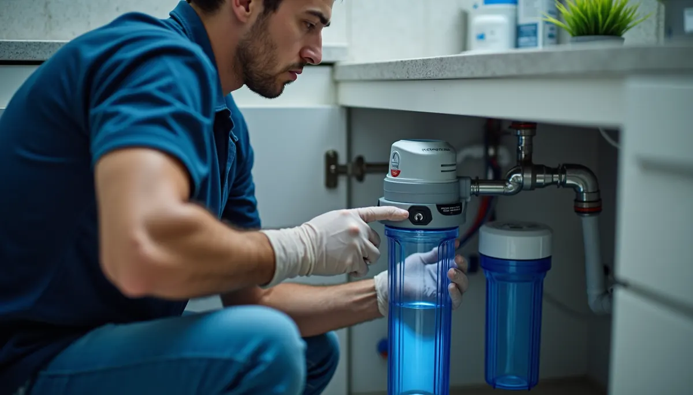

Unlock the Secrets to Crystal Clear Confidence with Reverse Osmosis from Angle Stop Plumbing
In today's health-conscious society, we are increasingly careful about our food choices. We read ingredient labels and often favor organic options. However, have you considered the quality of your drinking water? While municipal supplies are treated, they can still harbor contaminants that may concern you. This is where a reverse osmosis (RO) system becomes essential. And for reliable installation in Murfreesboro, TN, Angle Stop Plumbing is the partner you can trust.
Imagine this: your tap water may contain dissolved solids, chlorine, fluoride, heavy metals, pesticides, and even harmful bacteria and viruses. The Environmental Protection Agency (EPA) regulates these substances, but some can still exist in trace amounts that could accumulate over time. For instance, studies indicate that nearly 15% of all U.S. drinking water systems contain lead above EPA's action level. Even if these levels are deemed "safe," many homeowners prefer to eliminate these risks altogether. Additionally, impurities can severely affect the taste and odor of your water, making hydration less appealing.
Enter the Reverse Osmosis Revolution
A reverse osmosis system utilizes a structured filtration process to remove a vast majority of these unwanted contaminants. Here’s a straightforward look at how it operates:
- Prefiltration: The water first passes through sediment and carbon filters, eliminating larger particles such as dirt, rust, and chlorine. This pre-cleans the water and prepares it for the RO membrane.
- Reverse Osmosis Membrane: This is the core of the system. By applying pressure, water molecules are forced through the tiny pores of the membrane, while larger contaminants are left behind and discarded. In fact, an RO system can remove up to 99% of dissolved salts and contaminants.
- Post-filtration: The purified water flows through a final carbon filter to remove any lingering tastes or odors. The result is clean, refreshing water that you can trust.
Why Should You Invest in an RO System?
Investing in a reverse osmosis system yields numerous benefits. First and foremost, it offers peace of mind. You can enjoy purified water, knowing it has been meticulously filtered.
Moreover, RO water significantly enhances flavors, making it ideal for cooking, baking, and even your morning coffee. Studies have shown that using purified water can bring out the best in food flavors, ensuring every dish tastes vibrant and fresh.
From a financial standpoint, while there is an initial cost for installation, many families find they save money in the long run by reducing their dependence on bottled water. In 2020, the average family spent about $1,200 annually on bottled water. By switching to an RO system, you not only save money but also contribute to reducing the 38 million plastic bottles that end up in landfills daily.
Furthermore, maintenance is simple. Routine filter changes every 6 to 12 months—based on your usage—ensure your system operates efficiently for years.
The Health Benefits of Purified Water
Water quality is critical for health. Drinking clear, pure water directly affects your wellness. Contaminants like lead and chlorine pose significant risks, especially to vulnerable populations such as children and pregnant women.
Utilizing an RO system actively reduces your exposure to these harmful substances. Research shows that consuming high-quality water can lead to improved hydration, better digestion, and may even assist in detoxifying your body.
Moreover, a well-made RO system can eliminate harmful microorganisms, providing an additional safety layer for your family. You’re not just investing in technology; you’re investing in health and well-being.
Eco-Friendly Living with RO
Installing a reverse osmosis system is a choice that benefits both your health and the environment. By choosing RO, you significantly reduce your reliance on bottled water, which helps in decreasing plastic waste and your overall carbon footprint.
As environmental awareness increases, many consumers are opting for sustainable solutions. By incorporating a reverse osmosis system into your home, you’re playing a part in conserving essential resources and promoting a cleaner planet for generations to come.
Choosing Angle Stop Plumbing for Your RO Installation
When considering an RO system installation, partnering with an experienced plumbing service is crucial. Angle Stop Plumbing has earned a strong reputation in Murfreesboro, TN, for ensuring that RO systems are installed correctly and work efficiently.
Their experts will assess your needs and recommend the best system tailored to you. Expect top-notch service throughout the entire process—from the initial consultation to the final installation—along with continued support for maintenance.
With Angle Stop Plumbing, you gain not just an RO system but a dependable partner in maintaining your water's purity. Their dedicated team is always available to answer questions and assist with any upkeep you might need.

The Path to Clear Water Begins Here
Investing in a reverse osmosis system through Angle Stop Plumbing transcends just having better-tasting water. It's an investment in your health, environmental responsibility, and efficient home living.
With the ability to remove harmful contaminants, improve water quality, and secure your family's safety, the decision is evident—choosing a reverse osmosis system is a choice you will not regret.
So, why wait? Take steps towards crystal clear confidence today! Explore the world of reverse osmosis systems and taste the difference with every glass.